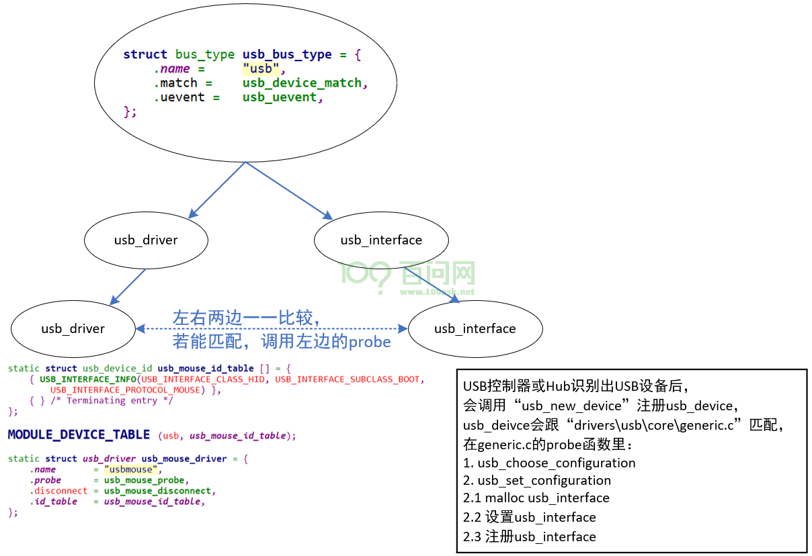
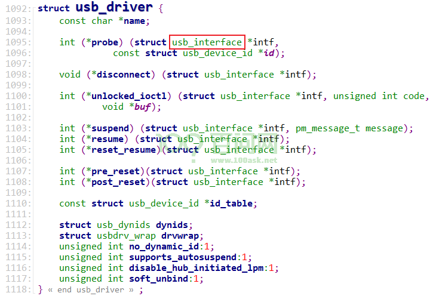

08_USB设备驱动模型#
参考资料：
Linux内核源码：
include\linux\usb.hLinux内核源码：
drivers\hid\usbhid\usbmouse.c
1. BUS/DEV/DRV模型#

“USB接口”是逻辑上的USB设备，我们编写的usb_driver驱动程序，支持的是”USB接口”：

USB控制器或Hub识别出USB设备后，会创建、注册usb_deive
usb_device被”drivers\usb\core\generic.c”驱动认领后，会选择、设置某个配置
这个配置下面的接口，都会分配、设置、注册一个usb_interface
左边的usb_driver和右边的usb_interface如果匹配，则掉用usb_driver.probe
2. 接口函数#
在USB设备驱动程序中，能使用的USB函数都在这个头文件里：include\linux\usb.h。
2.1 pipe#
使用这些接口函数的主要目的是传输数据，传输数据的对象是USB设备里的某个endpoint，这被称为pipe：
/* Create various pipes... */
#define usb_sndctrlpipe(dev, endpoint) \
((PIPE_CONTROL << 30) | __create_pipe(dev, endpoint))
#define usb_rcvctrlpipe(dev, endpoint) \
((PIPE_CONTROL << 30) | __create_pipe(dev, endpoint) | USB_DIR_IN)
#define usb_sndisocpipe(dev, endpoint) \
((PIPE_ISOCHRONOUS << 30) | __create_pipe(dev, endpoint))
#define usb_rcvisocpipe(dev, endpoint) \
((PIPE_ISOCHRONOUS << 30) | __create_pipe(dev, endpoint) | USB_DIR_IN)
#define usb_sndbulkpipe(dev, endpoint) \
((PIPE_BULK << 30) | __create_pipe(dev, endpoint))
#define usb_rcvbulkpipe(dev, endpoint) \
((PIPE_BULK << 30) | __create_pipe(dev, endpoint) | USB_DIR_IN)
#define usb_sndintpipe(dev, endpoint) \
((PIPE_INTERRUPT << 30) | __create_pipe(dev, endpoint))
#define usb_rcvintpipe(dev, endpoint) \
((PIPE_INTERRUPT << 30) | __create_pipe(dev, endpoint) | USB_DIR_IN)
2.2 同步传输函数#
对于控制传输、批量传输、中断传输，有3个同步函数可以用来直接发起传输。这些函数内部会创建、填充、提交一个URB(“usb request block”)，并等待它完成或超时。
函数原型如下：
/**
* usb_control_msg - Builds a control urb, sends it off and waits for completion
* @dev: pointer to the usb device to send the message to
* @pipe: endpoint "pipe" to send the message to
* @request: USB message request value
* @requesttype: USB message request type value
* @value: USB message value
* @index: USB message index value
* @data: pointer to the data to send
* @size: length in bytes of the data to send
* @timeout: time in msecs to wait for the message to complete before timing
* out (if 0 the wait is forever)
*
* Context: !in_interrupt ()
*
* This function sends a simple control message to a specified endpoint and
* waits for the message to complete, or timeout.
*
* Don't use this function from within an interrupt context, like a bottom half
* handler. If you need an asynchronous message, or need to send a message
* from within interrupt context, use usb_submit_urb().
* If a thread in your driver uses this call, make sure your disconnect()
* method can wait for it to complete. Since you don't have a handle on the
* URB used, you can't cancel the request.
*
* Return: If successful, the number of bytes transferred. Otherwise, a negative
* error number.
*/
int usb_control_msg(struct usb_device *dev, unsigned int pipe, __u8 request,
__u8 requesttype, __u16 value, __u16 index, void *data,
__u16 size, int timeout);
/**
* usb_bulk_msg - Builds a bulk urb, sends it off and waits for completion
* @usb_dev: pointer to the usb device to send the message to
* @pipe: endpoint "pipe" to send the message to
* @data: pointer to the data to send
* @len: length in bytes of the data to send
* @actual_length: pointer to a location to put the actual length transferred
* in bytes
* @timeout: time in msecs to wait for the message to complete before
* timing out (if 0 the wait is forever)
*
* Context: !in_interrupt ()
*
* This function sends a simple bulk message to a specified endpoint
* and waits for the message to complete, or timeout.
*
* Don't use this function from within an interrupt context, like a bottom half
* handler. If you need an asynchronous message, or need to send a message
* from within interrupt context, use usb_submit_urb() If a thread in your
* driver uses this call, make sure your disconnect() method can wait for it to
* complete. Since you don't have a handle on the URB used, you can't cancel
* the request.
*
* Because there is no usb_interrupt_msg() and no USBDEVFS_INTERRUPT ioctl,
* users are forced to abuse this routine by using it to submit URBs for
* interrupt endpoints. We will take the liberty of creating an interrupt URB
* (with the default interval) if the target is an interrupt endpoint.
*
* Return:
* If successful, 0. Otherwise a negative error number. The number of actual
* bytes transferred will be stored in the @actual_length parameter.
*
*/
int usb_bulk_msg(struct usb_device *usb_dev, unsigned int pipe,
void *data, int len, int *actual_length, int timeout);
/**
* usb_interrupt_msg - Builds an interrupt urb, sends it off and waits for completion
* @usb_dev: pointer to the usb device to send the message to
* @pipe: endpoint "pipe" to send the message to
* @data: pointer to the data to send
* @len: length in bytes of the data to send
* @actual_length: pointer to a location to put the actual length transferred
* in bytes
* @timeout: time in msecs to wait for the message to complete before
* timing out (if 0 the wait is forever)
*
* Context: !in_interrupt ()
*
* This function sends a simple interrupt message to a specified endpoint and
* waits for the message to complete, or timeout.
*
* Don't use this function from within an interrupt context, like a bottom half
* handler. If you need an asynchronous message, or need to send a message
* from within interrupt context, use usb_submit_urb() If a thread in your
* driver uses this call, make sure your disconnect() method can wait for it to
* complete. Since you don't have a handle on the URB used, you can't cancel
* the request.
*
* Return:
* If successful, 0. Otherwise a negative error number. The number of actual
* bytes transferred will be stored in the @actual_length parameter.
*/
int usb_interrupt_msg(struct usb_device *usb_dev, unsigned int pipe,
void *data, int len, int *actual_length, int timeout);
2.3 异步传输函数#
使用URB进行传输时，它是异步方式：需要先分配、构造、提交一个URB(“usb request block”)，当传输完成后，它的回调函数被调用。
关键就在于需要填充URB：
dev：跟谁传输数据
pipe：跟哪个pipe传输数据
buffer：里面存有要发送的数据，或者用来接收要读取的数据
数据长度
回调函数
2.3.1 分配和释放URB#
函数原型如下：
/**
* usb_alloc_urb - creates a new urb for a USB driver to use
* @iso_packets: number of iso packets for this urb
* @mem_flags: the type of memory to allocate, see kmalloc() for a list of
* valid options for this.
*
* Creates an urb for the USB driver to use, initializes a few internal
* structures, increments the usage counter, and returns a pointer to it.
*
* If the driver want to use this urb for interrupt, control, or bulk
* endpoints, pass '0' as the number of iso packets.
*
* The driver must call usb_free_urb() when it is finished with the urb.
*
* Return: A pointer to the new urb, or %NULL if no memory is available.
*/
struct urb *usb_alloc_urb(int iso_packets, gfp_t mem_flags);
/**
* usb_free_urb - frees the memory used by a urb when all users of it are finished
* @urb: pointer to the urb to free, may be NULL
*
* Must be called when a user of a urb is finished with it. When the last user
* of the urb calls this function, the memory of the urb is freed.
*
* Note: The transfer buffer associated with the urb is not freed unless the
* URB_FREE_BUFFER transfer flag is set.
*/
void usb_free_urb(struct urb *urb);
2.3.2 分配/释放DMA Buffer#
发起USB传输时，数据保存在buffer里。这个buffer可以是一般的buffer，也可以是DMA Buffer。
对于一般的buffer，在提交URB时会临时分配一个DMA Buffer：
发送数据时：函数内部会先从一般buffer中把数据复制到DMA Buffer，在提交给USB控制器
读取数据时：USB控制器先把数据传到DMA Buffer，函数内部在把DMA Buffer的数据复制到一般buffer
中间增加了一次数据的拷贝，效率低
我们可以直接使用DMA Buffer，函数原型如下：
/**
* usb_alloc_coherent - allocate dma-consistent buffer for URB_NO_xxx_DMA_MAP
* @dev: device the buffer will be used with
* @size: requested buffer size
* @mem_flags: affect whether allocation may block
* @dma: used to return DMA address of buffer
*
* Return: Either null (indicating no buffer could be allocated), or the
* cpu-space pointer to a buffer that may be used to perform DMA to the
* specified device. Such cpu-space buffers are returned along with the DMA
* address (through the pointer provided).
*
* Note:
* These buffers are used with URB_NO_xxx_DMA_MAP set in urb->transfer_flags
* to avoid behaviors like using "DMA bounce buffers", or thrashing IOMMU
* hardware during URB completion/resubmit. The implementation varies between
* platforms, depending on details of how DMA will work to this device.
* Using these buffers also eliminates cacheline sharing problems on
* architectures where CPU caches are not DMA-coherent. On systems without
* bus-snooping caches, these buffers are uncached.
*
* When the buffer is no longer used, free it with usb_free_coherent().
*/
void *usb_alloc_coherent(struct usb_device *dev, size_t size, gfp_t mem_flags,
dma_addr_t *dma);
/**
* usb_free_coherent - free memory allocated with usb_alloc_coherent()
* @dev: device the buffer was used with
* @size: requested buffer size
* @addr: CPU address of buffer
* @dma: DMA address of buffer
*
* This reclaims an I/O buffer, letting it be reused. The memory must have
* been allocated using usb_alloc_coherent(), and the parameters must match
* those provided in that allocation request.
*/
void usb_free_coherent(struct usb_device *dev, size_t size, void *addr,
dma_addr_t dma);
2.3.3 填充URB#
对于控制传输、批量传输、中断传输，分别有如下函数：
/**
* usb_fill_control_urb - initializes a control urb
* @urb: pointer to the urb to initialize.
* @dev: pointer to the struct usb_device for this urb.
* @pipe: the endpoint pipe
* @setup_packet: pointer to the setup_packet buffer
* @transfer_buffer: pointer to the transfer buffer
* @buffer_length: length of the transfer buffer
* @complete_fn: pointer to the usb_complete_t function
* @context: what to set the urb context to.
*
* Initializes a control urb with the proper information needed to submit
* it to a device.
*/
static inline void usb_fill_control_urb(struct urb *urb,
struct usb_device *dev,
unsigned int pipe,
unsigned char *setup_packet,
void *transfer_buffer,
int buffer_length,
usb_complete_t complete_fn,
void *context);
/**
* usb_fill_bulk_urb - macro to help initialize a bulk urb
* @urb: pointer to the urb to initialize.
* @dev: pointer to the struct usb_device for this urb.
* @pipe: the endpoint pipe
* @transfer_buffer: pointer to the transfer buffer
* @buffer_length: length of the transfer buffer
* @complete_fn: pointer to the usb_complete_t function
* @context: what to set the urb context to.
*
* Initializes a bulk urb with the proper information needed to submit it
* to a device.
*/
static inline void usb_fill_bulk_urb(struct urb *urb,
struct usb_device *dev,
unsigned int pipe,
void *transfer_buffer,
int buffer_length,
usb_complete_t complete_fn,
void *context);
/**
* usb_fill_int_urb - macro to help initialize a interrupt urb
* @urb: pointer to the urb to initialize.
* @dev: pointer to the struct usb_device for this urb.
* @pipe: the endpoint pipe
* @transfer_buffer: pointer to the transfer buffer
* @buffer_length: length of the transfer buffer
* @complete_fn: pointer to the usb_complete_t function
* @context: what to set the urb context to.
* @interval: what to set the urb interval to, encoded like
* the endpoint descriptor's bInterval value.
*
* Initializes a interrupt urb with the proper information needed to submit
* it to a device.
*
* Note that High Speed and SuperSpeed(+) interrupt endpoints use a logarithmic
* encoding of the endpoint interval, and express polling intervals in
* microframes (eight per millisecond) rather than in frames (one per
* millisecond).
*
* Wireless USB also uses the logarithmic encoding, but specifies it in units of
* 128us instead of 125us. For Wireless USB devices, the interval is passed
* through to the host controller, rather than being translated into microframe
* units.
*/
static inline void usb_fill_int_urb(struct urb *urb,
struct usb_device *dev,
unsigned int pipe,
void *transfer_buffer,
int buffer_length,
usb_complete_t complete_fn,
void *context,
int interval);
如果URB使用DMA Buffer，那么还需要设置一个flag表明这点：
urb->transfer_dma = DMA address of buffer; // usb_alloc_coherent的输出参数
urb->transfer_flags |= URB_NO_TRANSFER_DMA_MAP;
2.3.4 提交URB#
构造好URB后，需要提交到USB系统里，才能启动传输。
/**
* usb_submit_urb - issue an asynchronous transfer request for an endpoint
* @urb: pointer to the urb describing the request
* @mem_flags: the type of memory to allocate, see kmalloc() for a list
* of valid options for this.
*
* This submits a transfer request, and transfers control of the URB
* describing that request to the USB subsystem. Request completion will
* be indicated later, asynchronously, by calling the completion handler.
* The three types of completion are success, error, and unlink
* (a software-induced fault, also called "request cancellation").
*
* URBs may be submitted in interrupt context.
*
* The caller must have correctly initialized the URB before submitting
* it. Functions such as usb_fill_bulk_urb() and usb_fill_control_urb() are
* available to ensure that most fields are correctly initialized, for
* the particular kind of transfer, although they will not initialize
* any transfer flags.
*
* If the submission is successful, the complete() callback from the URB
* will be called exactly once, when the USB core and Host Controller Driver
* (HCD) are finished with the URB. When the completion function is called,
* control of the URB is returned to the device driver which issued the
* request. The completion handler may then immediately free or reuse that
* URB.
*
* With few exceptions, USB device drivers should never access URB fields
* provided by usbcore or the HCD until its complete() is called.
* The exceptions relate to periodic transfer scheduling. For both
* interrupt and isochronous urbs, as part of successful URB submission
* urb->interval is modified to reflect the actual transfer period used
* (normally some power of two units). And for isochronous urbs,
* urb->start_frame is modified to reflect when the URB's transfers were
* scheduled to start.
*
* Not all isochronous transfer scheduling policies will work, but most
* host controller drivers should easily handle ISO queues going from now
* until 10-200 msec into the future. Drivers should try to keep at
* least one or two msec of data in the queue; many controllers require
* that new transfers start at least 1 msec in the future when they are
* added. If the driver is unable to keep up and the queue empties out,
* the behavior for new submissions is governed by the URB_ISO_ASAP flag.
* If the flag is set, or if the queue is idle, then the URB is always
* assigned to the first available (and not yet expired) slot in the
* endpoint's schedule. If the flag is not set and the queue is active
* then the URB is always assigned to the next slot in the schedule
* following the end of the endpoint's previous URB, even if that slot is
* in the past. When a packet is assigned in this way to a slot that has
* already expired, the packet is not transmitted and the corresponding
* usb_iso_packet_descriptor's status field will return -EXDEV. If this
* would happen to all the packets in the URB, submission fails with a
* -EXDEV error code.
*
* For control endpoints, the synchronous usb_control_msg() call is
* often used (in non-interrupt context) instead of this call.
* That is often used through convenience wrappers, for the requests
* that are standardized in the USB 2.0 specification. For bulk
* endpoints, a synchronous usb_bulk_msg() call is available.
*
* Return:
* 0 on successful submissions. A negative error number otherwise.
*
* Request Queuing:
*
* URBs may be submitted to endpoints before previous ones complete, to
* minimize the impact of interrupt latencies and system overhead on data
* throughput. With that queuing policy, an endpoint's queue would never
* be empty. This is required for continuous isochronous data streams,
* and may also be required for some kinds of interrupt transfers. Such
* queuing also maximizes bandwidth utilization by letting USB controllers
* start work on later requests before driver software has finished the
* completion processing for earlier (successful) requests.
*
* As of Linux 2.6, all USB endpoint transfer queues support depths greater
* than one. This was previously a HCD-specific behavior, except for ISO
* transfers. Non-isochronous endpoint queues are inactive during cleanup
* after faults (transfer errors or cancellation).
*
* Reserved Bandwidth Transfers:
*
* Periodic transfers (interrupt or isochronous) are performed repeatedly,
* using the interval specified in the urb. Submitting the first urb to
* the endpoint reserves the bandwidth necessary to make those transfers.
* If the USB subsystem can't allocate sufficient bandwidth to perform
* the periodic request, submitting such a periodic request should fail.
*
* For devices under xHCI, the bandwidth is reserved at configuration time, or
* when the alt setting is selected. If there is not enough bus bandwidth, the
* configuration/alt setting request will fail. Therefore, submissions to
* periodic endpoints on devices under xHCI should never fail due to bandwidth
* constraints.
*
* Device drivers must explicitly request that repetition, by ensuring that
* some URB is always on the endpoint's queue (except possibly for short
* periods during completion callbacks). When there is no longer an urb
* queued, the endpoint's bandwidth reservation is canceled. This means
* drivers can use their completion handlers to ensure they keep bandwidth
* they need, by reinitializing and resubmitting the just-completed urb
* until the driver longer needs that periodic bandwidth.
*
* Memory Flags:
*
* The general rules for how to decide which mem_flags to use
* are the same as for kmalloc. There are four
* different possible values; GFP_KERNEL, GFP_NOFS, GFP_NOIO and
* GFP_ATOMIC.
*
* GFP_NOFS is not ever used, as it has not been implemented yet.
*
* GFP_ATOMIC is used when
* (a) you are inside a completion handler, an interrupt, bottom half,
* tasklet or timer, or
* (b) you are holding a spinlock or rwlock (does not apply to
* semaphores), or
* (c) current->state != TASK_RUNNING, this is the case only after
* you've changed it.
*
* GFP_NOIO is used in the block io path and error handling of storage
* devices.
*
* All other situations use GFP_KERNEL.
*
* Some more specific rules for mem_flags can be inferred, such as
* (1) start_xmit, timeout, and receive methods of network drivers must
* use GFP_ATOMIC (they are called with a spinlock held);
* (2) queuecommand methods of scsi drivers must use GFP_ATOMIC (also
* called with a spinlock held);
* (3) If you use a kernel thread with a network driver you must use
* GFP_NOIO, unless (b) or (c) apply;
* (4) after you have done a down() you can use GFP_KERNEL, unless (b) or (c)
* apply or your are in a storage driver's block io path;
* (5) USB probe and disconnect can use GFP_KERNEL unless (b) or (c) apply; and
* (6) changing firmware on a running storage or net device uses
* GFP_NOIO, unless b) or c) apply
*
*/
int usb_submit_urb(struct urb *urb, gfp_t mem_flags);
2.3.5 取消URB#
已经提交的URB，可以取消它，有2个函数：
usb_kill_urb：这是一个同步函数，它会等待URB结束
usb_unlink_urb：这是一个异步函数，它不会等待URB结束，USB控制器驱动会调用它的回调函数
/**
* usb_kill_urb - cancel a transfer request and wait for it to finish
* @urb: pointer to URB describing a previously submitted request,
* may be NULL
*
* This routine cancels an in-progress request. It is guaranteed that
* upon return all completion handlers will have finished and the URB
* will be totally idle and available for reuse. These features make
* this an ideal way to stop I/O in a disconnect() callback or close()
* function. If the request has not already finished or been unlinked
* the completion handler will see urb->status == -ENOENT.
*
* While the routine is running, attempts to resubmit the URB will fail
* with error -EPERM. Thus even if the URB's completion handler always
* tries to resubmit, it will not succeed and the URB will become idle.
*
* The URB must not be deallocated while this routine is running. In
* particular, when a driver calls this routine, it must insure that the
* completion handler cannot deallocate the URB.
*
* This routine may not be used in an interrupt context (such as a bottom
* half or a completion handler), or when holding a spinlock, or in other
* situations where the caller can't schedule().
*
* This routine should not be called by a driver after its disconnect
* method has returned.
*/
void usb_kill_urb(struct urb *urb);
/**
* usb_unlink_urb - abort/cancel a transfer request for an endpoint
* @urb: pointer to urb describing a previously submitted request,
* may be NULL
*
* This routine cancels an in-progress request. URBs complete only once
* per submission, and may be canceled only once per submission.
* Successful cancellation means termination of @urb will be expedited
* and the completion handler will be called with a status code
* indicating that the request has been canceled (rather than any other
* code).
*
* Drivers should not call this routine or related routines, such as
* usb_kill_urb() or usb_unlink_anchored_urbs(), after their disconnect
* method has returned. The disconnect function should synchronize with
* a driver's I/O routines to insure that all URB-related activity has
* completed before it returns.
*
* This request is asynchronous, however the HCD might call the ->complete()
* callback during unlink. Therefore when drivers call usb_unlink_urb(), they
* must not hold any locks that may be taken by the completion function.
* Success is indicated by returning -EINPROGRESS, at which time the URB will
* probably not yet have been given back to the device driver. When it is
* eventually called, the completion function will see @urb->status ==
* -ECONNRESET.
* Failure is indicated by usb_unlink_urb() returning any other value.
* Unlinking will fail when @urb is not currently "linked" (i.e., it was
* never submitted, or it was unlinked before, or the hardware is already
* finished with it), even if the completion handler has not yet run.
*
* The URB must not be deallocated while this routine is running. In
* particular, when a driver calls this routine, it must insure that the
* completion handler cannot deallocate the URB.
*
* Return: -EINPROGRESS on success. See description for other values on
* failure.
*
* Unlinking and Endpoint Queues:
*
* [The behaviors and guarantees described below do not apply to virtual
* root hubs but only to endpoint queues for physical USB devices.]
*
* Host Controller Drivers (HCDs) place all the URBs for a particular
* endpoint in a queue. Normally the queue advances as the controller
* hardware processes each request. But when an URB terminates with an
* error its queue generally stops (see below), at least until that URB's
* completion routine returns. It is guaranteed that a stopped queue
* will not restart until all its unlinked URBs have been fully retired,
* with their completion routines run, even if that's not until some time
* after the original completion handler returns. The same behavior and
* guarantee apply when an URB terminates because it was unlinked.
*
* Bulk and interrupt endpoint queues are guaranteed to stop whenever an
* URB terminates with any sort of error, including -ECONNRESET, -ENOENT,
* and -EREMOTEIO. Control endpoint queues behave the same way except
* that they are not guaranteed to stop for -EREMOTEIO errors. Queues
* for isochronous endpoints are treated differently, because they must
* advance at fixed rates. Such queues do not stop when an URB
* encounters an error or is unlinked. An unlinked isochronous URB may
* leave a gap in the stream of packets; it is undefined whether such
* gaps can be filled in.
*
* Note that early termination of an URB because a short packet was
* received will generate a -EREMOTEIO error if and only if the
* URB_SHORT_NOT_OK flag is set. By setting this flag, USB device
* drivers can build deep queues for large or complex bulk transfers
* and clean them up reliably after any sort of aborted transfer by
* unlinking all pending URBs at the first fault.
*
* When a control URB terminates with an error other than -EREMOTEIO, it
* is quite likely that the status stage of the transfer will not take
* place.
*/
int usb_unlink_urb(struct urb *urb);